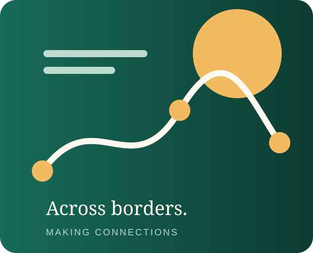

01
Kummerċ u e-commerce
Importazzjoni, esportazzjoni u e-commerce ta' prodotti Afrikani u prodotti oħra.
Nġibu flimkien e-commerce, attività kummerċjali u servizzi prattiċi b'perspettiva globali.

Firxa wiesgħa ta' servizzi fejn organizzazzjoni affidabbli, perspettiva transkonfinali u appoġġ prattiku huma importanti.
Importazzjoni, esportazzjoni u e-commerce ta' prodotti Afrikani u prodotti oħra.
Konsulenza dwar soluzzjonijiet internazzjonali għan-negozju, disponibbli 24 siegħa kuljum.
Servizzi ta' sigurtà u catering mobbli għal ġewwa u barra.
Ibrahim Isah NNDF Global Business Solution hija negozju bbażat f'Zurich li jiffoka fuq soluzzjonijiet internazzjonali għan-negozju u servizzi marbuta mal-kummerċ.
Tixtieq tiddiskuti soluzzjoni internazzjonali għan-negozju, appoġġ fil-kummerċ jew servizz ieħor tagħna? Nilqgħu l-mistoqsija tiegħek.